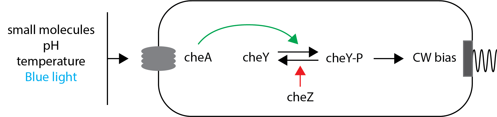
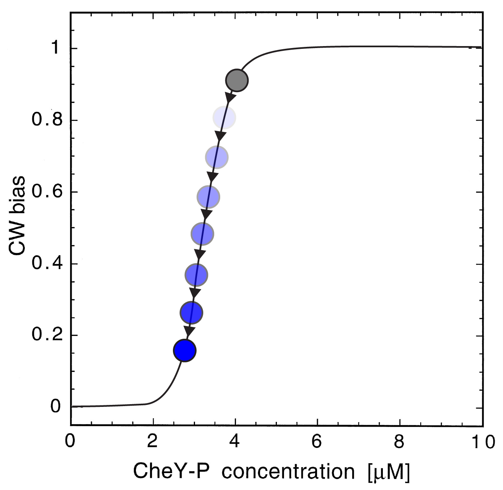
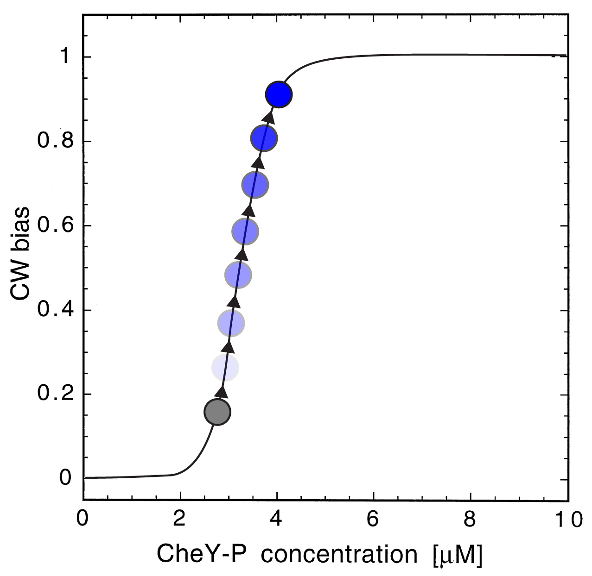
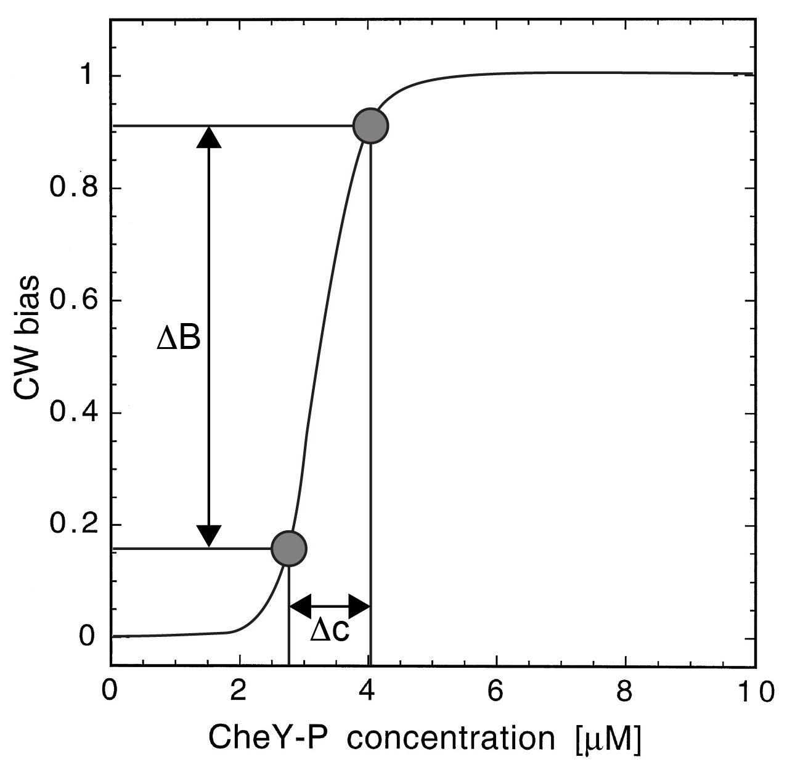
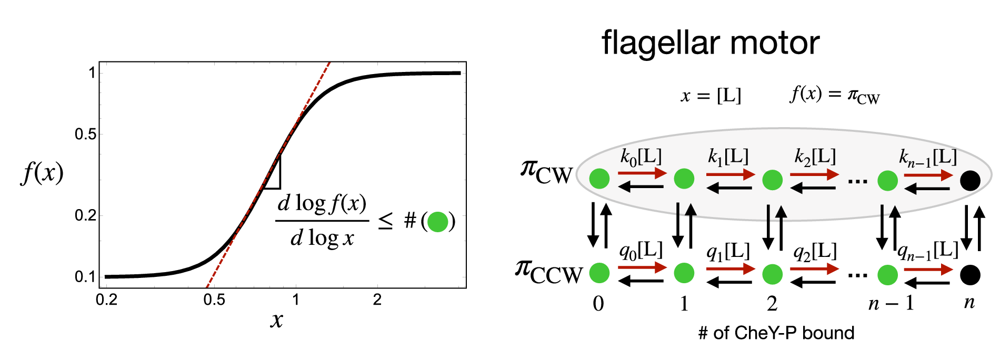
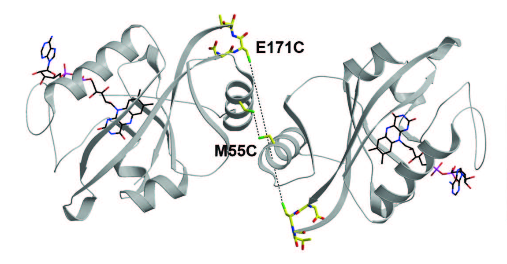
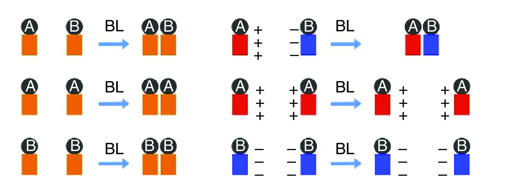
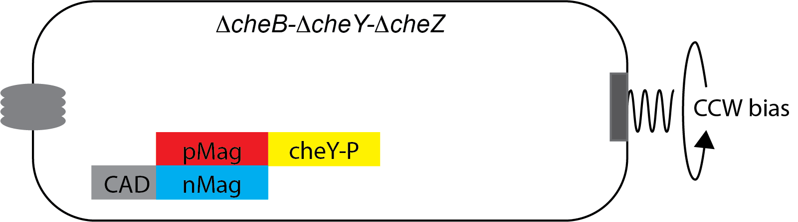
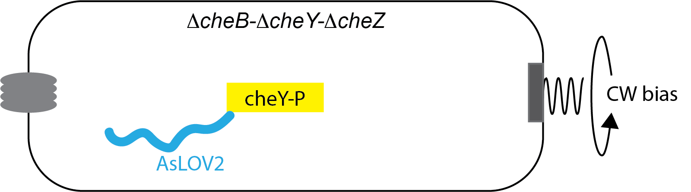

https://bit.ly/AmsterdamBacteria2023
Bacterial structural biology
Aravi Samuel, 2022

Howard Berg (1934-2021)
Signal transduction minimized

increase [cheY-P] → increase CW bias
decrease [cheY-P] → decrease CW bias
The bacterial flagellar motor

a puzzle of torque
a puzzle of switching
Cluzel et al's ultrasensitive motor

solved a puzzle of gain
created a puzzle of tuning
Yuan et al's adaptive motor

solved a puzzle of gain
created a puzzle of tuning
An optogenetic inspiration

Optogenetic control of bias

Start with high bias
Optogenetic control of bias
Flash → End with low bias
Optogenetic control of bias

Start with low bias
Optogenetic control of bias
Flash → End with high bias
Optogenetic control of bias
Quantify response coefficients: $\frac{d \log{B}}{d \log{C}} \sim \frac{\Delta B/B}{\Delta c/c}$
Optogenetic control of bias
 The physics of sensitivity is a fundamental bound of classes of models
Owen and Horowitz, 2023
Optogenetic protein dimerization
 Light-induced conformational change near flavin
of N-terminal cap of fungal photoreceptor Vivid
→ dimerization
Optogenetic magnets
 Protein engineering of electrostatic interactions creates
blue light-activated positive and negative "magnets"
Inactivation by sequestration

Active cheY-P pool in the cytoplasm → CW bias
Inactivation by sequestration
Flash → inactive pool is membrane bound
Optogenetic protein unfolding

Photoexcitation of Avina sativa phototropin 1 induces
displacement and unfolding of J$\alpha$ domain
Strickland et al 2010
Activation by unfolding

Inactive cheY-P pool caged by optogenetic protein
Activation by unfolding
Flash → Uncaged cheY-P → CW bias
Optogenetic Calibration

AsLov2 cycles between fluorescent and non-fluorescent state
YPet quenching via FRET
Acknowledgments

Alina Vrabioiu

Gabriel Hosu

Rowland Institute at Harvard